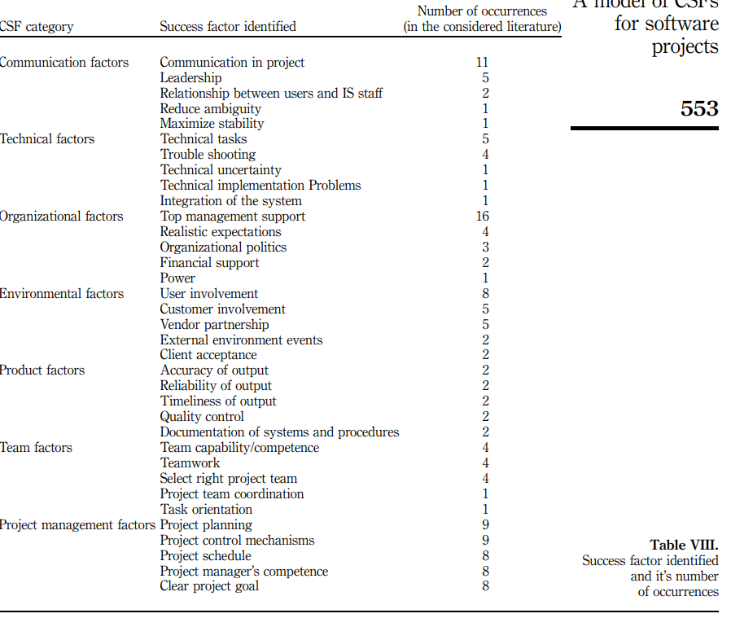

In dit stuk zal worden onderzocht en uitgelegd hoe er effectief gecommuniceerd kan worden met verschillende doelgroepen. Dit zal worden gedaan aan de hand van de volgende onderwerpen:
Communicatie doelgroepen
Tijdens de minor Smart Industry wordt er veel gecommuniceerd met verschillende doelgroepen. De communicatiedoelgroepen kan onderscheden worden in
3 groepen, namelijk:
Communicatiedoelen
Om je communicatiedoelen vast te stellen maak je een communicatiedoelstelling, Kotler & Armstrong (2017) zeggen hierover het volgende: "Een communicatiedoelstelling is een
specifieke communicatietaak die je binnen een specifieke periode wilt bereiken bij een specifiek doelpubliek". Deze communicatiedoelstelling wordt SMART geformuleerd.
Er zijn verschillende soorten communicatiedoelstellingen, namelijk (Intemarketing, z.d.):
Om communicatiedoelen te maken voor de Minor Smart Industry onderscheid ik twee dingen, namelijk mijn portfolio en het project. Ik zal de communicatidoelen bij deze twee SMART formuleren.
Mijn portfolio
Het hoofd communicatiedoel van mijn portfolio zal het verstrekken van informatie zijn. Echter is het ook van belang om interesse te creëren
om mijn stukken te willen lezen. Daarnaast komt een stukje awareness opbouwen terug in de confrontatiematrix van mijn SWOT-analyse.
Specifiek: De gemaakte opdrachten, bewijs van de competenties en de resultaten van het project duidelijk en overzichtelijk weergeven op mijn website.
Meetbaar: Op BKmoodle is te controleren of alle opdrachten gemaakt zijn. Door middel van het competentie overzicht kan gecontroleerd worden of alle competenties behandeld zijn.
Acceptabel: Vanuit de minor is de bedoeling dat je je resultaten weergeeft op een zelf gemaakte website, hierdoor is het acceptabel het op deze manier te doen. Voor het project zal een appart Word document naar de opdrachtgever verzonden worden aangezien het voor hem niet acceptabel is om de resultaten weer te geven op mijn website.
Realistisch: Ik beschik over voldoende kennis om de opdrachten, competenties en het project succesvol te maken. Daarnaast heb ik genoeg kennis van HTML en CSS om dit duidelijk weer te geven op een website.
Tijdsgebonden: Dit zal behaald moeten worden op uiterlijk 13 januari 2021.
Dit communicatiedoel is belangrijk omdat ik veel informatie heb geproduceerd tijdens de minor Smart Industry. Om deze minor succesvol af te ronden is het van belang dat de docenten een goed en duidelijk beeld krijgen van mijn ontwikkelde competenties. Door het overzichtelijk en duidelijk weer te geven op mijn website kunnen ze dit gemakkelijker doen.
Het project
Tijdens het project wat ik met mijn groepje doe voor ICR3ATE gaat het vooral om verstrekken van informatie. Tijdens het project doen wij vooral onderzoek en werken
we een Smart Contract uit. Met dit onderzoek ondersteunen wij een project met de benodigde informatie.
Specifiek: Onderzoek doen naar Micropayment systemen en Smart Contract systemen en het uitwerken hiervan in begrijpelijk informatie en hier een overzicht en aanbeveling van maken. Deze onderzoeken zijn opgedeeld in losse onderzoeken zodat er tussentijds bijgestuurd kan worden.
Meetbaar: Dit is meetbaar door te kijken naar de opgeleverde informatie.
Acceptabel: ICR3ATE heeft zelf gevraagd of wij als projectgroep deze dingen onderzochten, hierdoor is het acceptabel.
Realistisch: De onderwerpen zijn vaak moeilijk te begrijpen, maar door veel onderzoek en ondersteuning vanuit ICR3ATE moet dit lukken.
Tijdsgebonden: Totale project moet uiterlijk 13 januari 2021 af zijn. Losse deelopdrachten worden tussentijds aangeleverd.
Dit communicatiedoel is belangrijk zodat ICR3ATE verder kan met hun SenneTa project. Daarnaast is het belangrijk dat ICR3ATE goed geholpen is door de projectgroep zodat de projectgroep de minor Smart Industry succesvol kunnen doorlopen.
Effectiviteit van communicatie
Het meten van de effectiviteit van de communicatie wordt copytesting genoemd, hierbij wordt er gekeken of de boodschap goed overkomt (Kotler & Armstrong, 2017, p.217).
Tijdens de minor Smart Industry maakte ik elke week weekopdrachten die beoordeeld werden door medestudenten. De medestudenten gaven feedback op mijn werk
en hierbij kregen zij ook de mogelijkheid om aan te geven of de informatie duidelijk en begrijpbaar is, en dus goed overgekomen is. De feedback die ik hier kreeg was meestal positief,
soms mocht het wat uitgebreider of miste ze een bepaald stukje.
Wat mij opviel is wanneer er bijvoorbeeld een filmpje gemaakt is door mij de feedback vaak nog positiever was. Zelf merkte ik ook bij het bekijken van het werk van andere dat de informatie duidelijker en fijner over gebracht werd als er iets visueels bij te zien was. Denk hierbij aan een presentatie of een voor opgenomen filmpje. Nadat ik dit voor mezelf geconcludeerd had en dit ook als feedback terug kreeg heb ik dit meer opgepakt om mijn communicatie te verbeteren.
Sudhakar (2012) heeft een model gemaakt waarin de kritieke succes factoren binnen een software project uitgelicht worden. Dit model is te zien in Figuur 1.
In Figuur 1 komt naar voren dat communicatie een van de belangrijkste dingen is binnen een software project. Het project dat wij uitvoeren voor ICR3ATE is zo'n software project.
Communicatie methodes
Er zijn veel verschillende manieren om te communiceren (Info4communication, z.d.):
Tijdens de minor heb ik veel verschillende manieren van communiceren moeten toepassen. Alle 4 de bovenstaande manieren van communicatie heb ik toegepast tijdens de minor. De momenten van communicatie waren voornamelijk tijdens de lessen, weekopdrachten, mails en tijdens het project. De platformen die ik hiervoor gebruikt heb waren gedeeltelijk nieuw voor mij, dit kwam mede door COVID-19. Door COVID-19 moesten we na een paar weken alles vanuit huis doen. De platformen die ik gebruikt heb tijdens de minor: BKmoodle, Microsoft Teams, Google drive, Google Docs, Google Presentation, Google Spreadsheet, Google Meet, Gmail, Outlook, Github en mijn eigen website. Meerdere van deze platformen waren nieuw voor mij en dat was dus vaak een beetje experimenteren.
Reflectie
Tijdens het videobellen met Microsoft Teams en Google Meet merkte ik dat gesprekken prettigere waren wanneer de camera's aan staan. Door dit te doen krijg
je toch meer het idee dat het een echte vergadering is. Het videobellen gaf ook de mogelijkheid om gemakkelijk even een document te delen of een presentatie te geven.
Door dat je gemakkelijk een document kan delen of een presentatie kan laten zien is de communicatie effectiever, daarom vind ik dit een goede communicatie methode.
Zelf had ik meer gebruik mogen maken van het forum op BKmoodle. Door dit meer mee te nemen in mij communicatie strategie had ik tijd kunnen besparen door gebruik te maken van de kennis van andere. Daarnaast had ik mijn opgedaande kennis kunnen delen op het forum om mijn medestudenten te ondersteunen.
LiteratuurlijstInfo4communication. (z.d.). Vormen en soorten. Geraadpleegd op 5 janari 2021, van https://info4communication.wordpress.com/vormen-en-soorten/
Intemarketing. (z.d.). Communicatiedoelstellingen. Geraadpleegd op 4 januari 2021, van https://www.intemarketing.nl/marketing/basics/communicatiedoelstellingen
Kotler, P., & Armstrong, G. (2017). Marketing de essentie (13e editie). Amsterdam: Pearson Benelux.
Sudhakar, G.P. (2012). A model of critical succes factors for software projects. Geraadpleegd op 5 januari 2021, van https://d1wqtxts1xzle7.cloudfront.net/50777529/A_model_of_critical_success_factors_for_software_projects.pdf?1481174426=&response-content-disposition=inline%3B+filename%3DJournal_of_Enterprise_Information_Manage.pdf&Expires=1609859044&Signature=ZWCtnN69E3yy7mlR~jGbTq-d46QaxISHyPWBx3sR2eZyguC2lpyWKgnIx7mEX-6zfzrGG1jDy1ypSRxH8QyxpV2cWfrPIYR~dLPfwSt09j1u~yVb4nTIDqfwlxlwTeJArq6FovV6FH9qmVEsW14Be2DX3MGI8rX4IxpCfNzpCVlNkPNfYCF8kOkxA9DgoJpRwegs5vZtXaDPEzHDNRyLp4da0ziRGhVRIe7DclyLr1dPRhwlhJNJuTa8dZdMY-lkD2AtR7V1-jYymzAog6RyL~r1GuT9tvpljaonldp0CW6ThQDcrA3PzeNhB-XVybX5M4i1c6kHAcfjFRQpoEjuxw__&Key-Pair-Id=APKAJLOHF5GGSLRBV4ZA